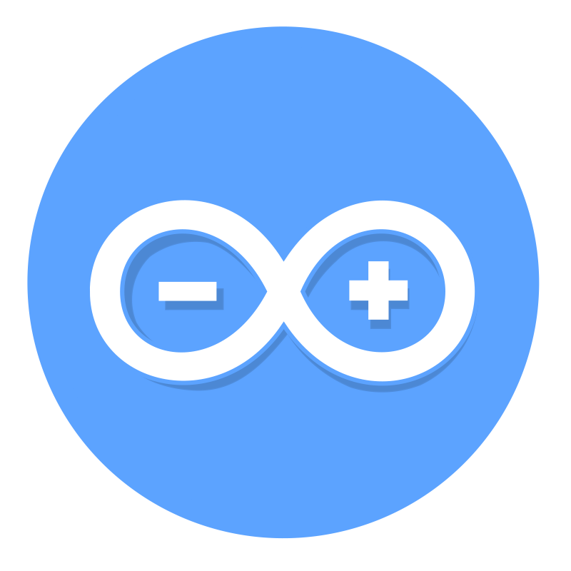

Arduino + AWS-Alexa for data and analytics
The team has developed a Python server that handles communication with Arduino via serial communication. The server also exposes an API for communication with an Amazon AWS Lambda function, which in turn communicates with the Amazon Alexa service.
This configuration enables voice communication with Arduino. Additionally, the Python server periodically sends the telemetry data from Arduino's sensors to the project's website.
